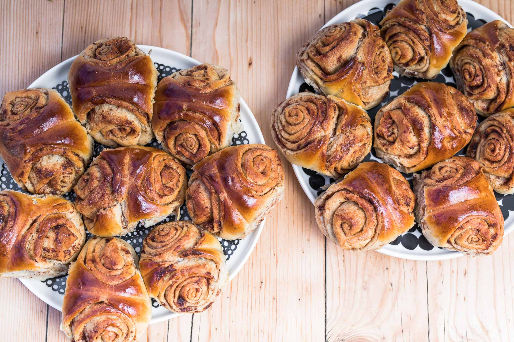

Korvapuustit

Description
Korvapuustit, or Cinnamon Buns are a Finnish delicacy. Made from pulla, a sweet, cardamom enriched bread with a cinnamon, sugar and butter filling, korvapuustit are often enjoyed with coffee or tea and are even celebrated on National Cinnamon Bun Day on the 4th of October in Finland and Sweden.
Ingredients
Dough
- 50g fresh yeast or 2 packets dry yeast
- 500ml milk
- 2 eggs
- 200ml sugar
- 2 teaspoons salt
- 1 tablespoons cardamom
- Approx. 1600ml flour
- 150g - 200g butter
- pearl sugar, to sprinkle on top
- 1 extra egg for glazing
Filling
- 100g butter
- 100ml sugar
- 2 tablespoon cinnamon
Steps
- Incorporate the yeast into the lukewarm milk, then add 2 eggs, sugar, cardamom, salt and approx. 400-500ml of flour, mix until incorporated.
- Add the rest of the flour slowly while kneeding until the dough no longer sticks to your hands as much, or the bowl.
- Kneed in the melted butter.
- Cover the bowl with a towel and set aside in a warm spot until it roughly doubles in size.
- Roll the dough out into 2 rectangular sheets and spread the softened butter evenly over them. Then sprinkle on the cinnamon and sugar.
- Tightly roll the sheets up starting from the bottom and leave the seam face down. Then cut along the rolls in a zig-zag pattern to form many even triangles. To shape the triangles, face the pointed side upwards and squish them down a bit with a finger. Cover with a towel and leave to raise for approx. 30 minutes.
- Glaze the dough with egg and sprinkle pearl sugar on top.
- Bake in a preheated oven for approx. 8 minutes at 225 celcius
Home
Back to Top